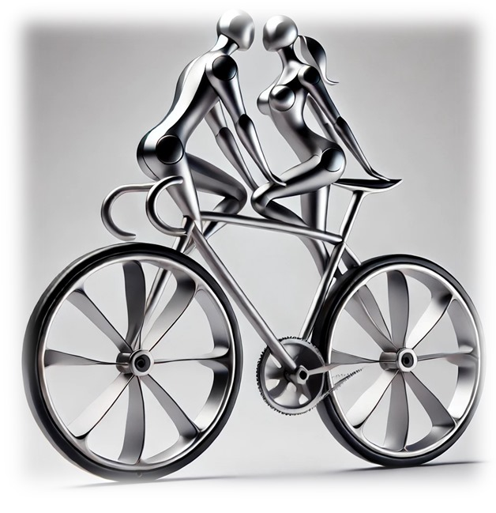
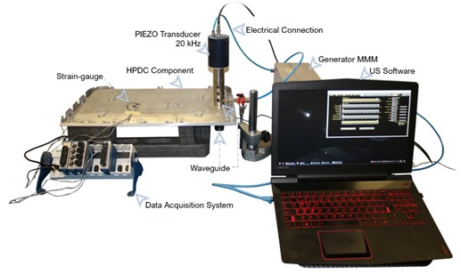
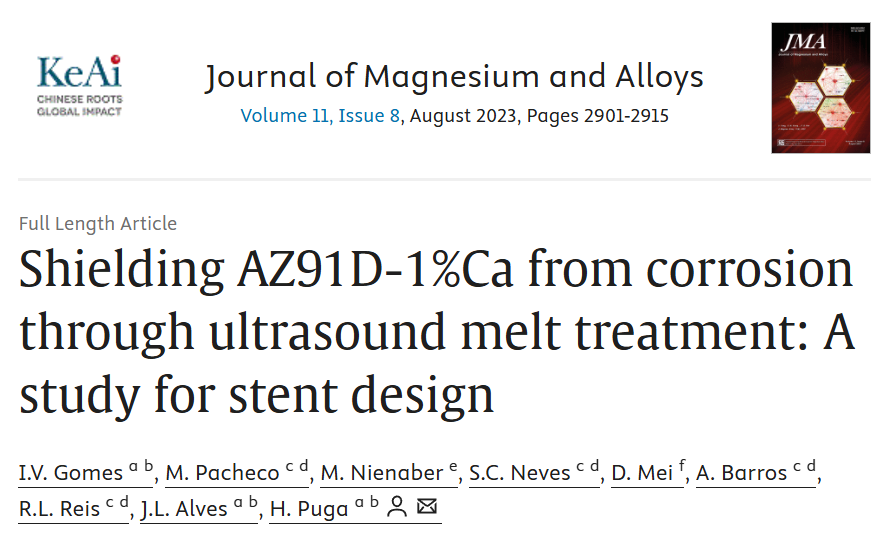

At UMtechnology, we’re passionate about pushing the boundaries of what’s possible with ultrasound.
Based in a vibrant university research lab, our team is dedicated to exploring and refining sonoprocessing
techniques that shape the future of material science, biomedical devices, and sustainable manufacturing.
From high-precision ultrasound melt treatments to real-time corrosion testing in simulated environments,
our work is grounded in both innovation and scientific rigor. Whether you're here to collaborate, learn,
or explore the impact of ultrasonic technologies, you’ve come to the right place.
Our Students
A list of our many projects that are being carried out in our lab.
Our Projects
A list of our many projects that are being carried out in our lab.
Lightweight Alloys - Recent Developments in Processing Methods
A list of some of our most cited papers on the topic, projects developed in the lab and in colaboration with students and other investigators. These publications reference UMTechnology as a pionneer in its area, developing new areas of our understanding and comprehension of such topics.
Shielding AZ91D-1%Ca from corrosion through ultrasound melt treatment
Lightweight Alloys - Recent Developments in Processing Methods
This project is a state-of-the-art platform for managing cloud resources efficiently.

Residual Stress Relief of Welded Aluminum Alloy Plate
This project revolutionizes how users interact with AI tools in real time.

Project 3
An innovative IoT system enabling smarter and more connected homes.

Abstract
Magnesium-based materials show great potential for producing biodegradable stents, but their high corrosion rates are a roadblock.
This study investigates whether ultrasound melt treatment can change the corrosion response of an extruded AZ91D-1.0%Ca (wt.%) in Earle's Balanced Salt Solution by
tailoring the intermetallics' morphology in the as-extruded state. The results showed that the wires from ultrasound-treated ingots corroded faster than non-treated
ones in immersion for up to 6 hours. This trend shifted for longer periods, and ultrasound-treated material showed lower corrosion rates and uniform corrosion, while
the non-treated material displayed localized corrosion signs. Tensile testing of the wires demonstrated that immersion in EBSS lowered the tensile strength and
elongation at fracture due to material degradation, regardless of the processing route. Nonetheless, this decline was sharper in the non-treated material.These findings
suggest that ultrasound melt processing can be a promising method for improving the corrosion resistance of magnesium-based materials, paving the way for their use in
manufacturing biodegradable stents.
Metallic cellular solids are a class of materials known for their high specific mechanical properties, being desirable in applications
where a combination of high strength or stiffness and low density are important. These lightweight materials are often stochastic and manufactured by foaming or casting.
If regular (periodic) lattice structures are desired, they may be manufactured by metallic additive manufacturing techniques. However, these have characteristic issues,
such as un-melted powders, porosity and heterogeneous microstructures. This study reports a novel low-cost route for producing regular lattice structures by an additive
manufacturing assisted investment casting technique. Fused filament fabrication is used to produce the lattice structure pattern which is infiltrated with plaster. The
pattern is then burnt off and the aluminum is cast in vacuum. In this way we can manufacture non-stochastic metallic lattices having fine struts/ribs (0.6 mm cross-section
using a 0.4 mm nozzle) and relative densities down to 0.036. X-ray micro computed tomography (μCT) showed that as-cast A356 Aluminium alloy frameworks have high dimensional
tolerances and fine detail control. Frameworks based on units of six connected struts ranging from intruding (auxetic) to protruding (hexagonal) strut angles are studied.
Vertical struts are finer than expected, reducing their moment of area which could impact their compressive strength. This new, low cost, route for producing high precision
metallic cellular lattices offers an attractive alternative to other additive manufacturing techniques (e.g. selective laser and electron beam melting).
Simulations of manufacturing processes typically rely on commercial or publicly available material databases. In the casting process,
additives such as grain refiners and eutectic Si modifiers can affect the properties of molten metal during solidification. However, these effects are not always
represented in the material’s thermophysical characteristics. This study differentiates the simulated filling and defect indicators of a aluminium alloy from different
material databases. Further, to account the effect of the grain refiner, thermal analysis data from a Al-7Si-Mg alloy with 0.2 wt.% Al-5Ti-B is used to create a
corrected alloy that minimises the difference between numerical and experimental results. Results indicate that minor differences in thermophysical properties can
affect misrun risk and filling temperatures. The corrected alloy more accurately represents heat release during phase transformation and reduces the temperature
error from 7°C to 4°C. Additionally, it more accurately represents shrinkage, with the exception of some localised defects.